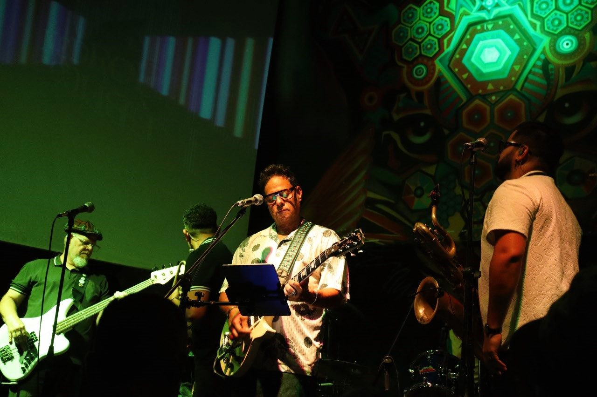
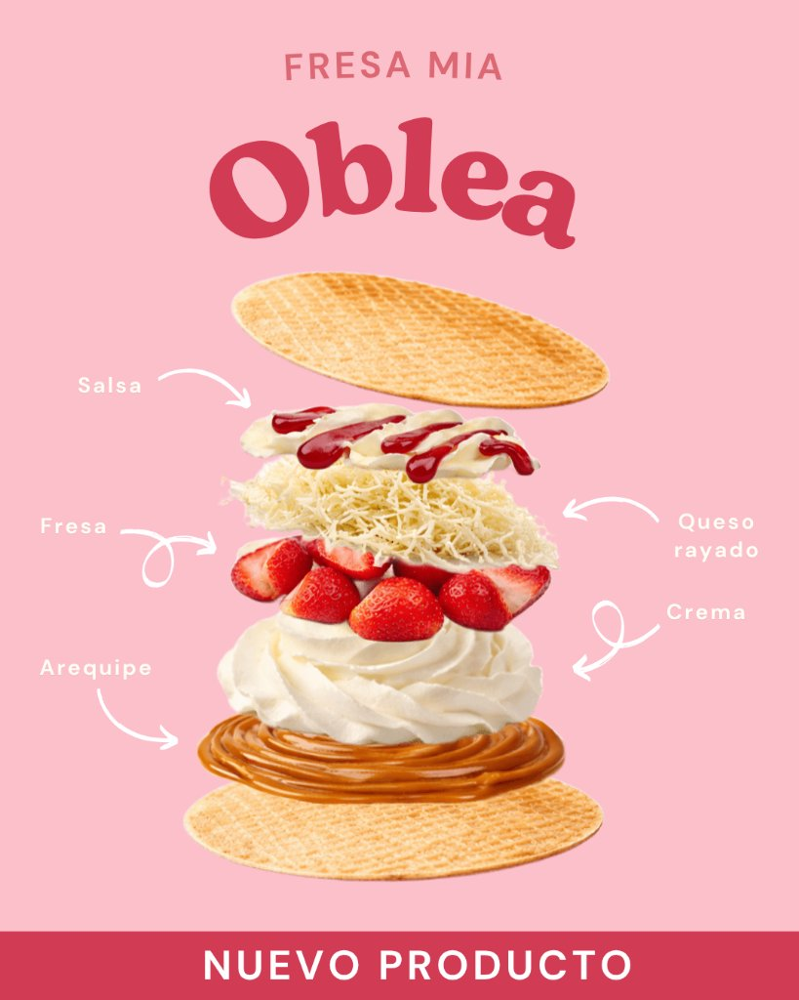
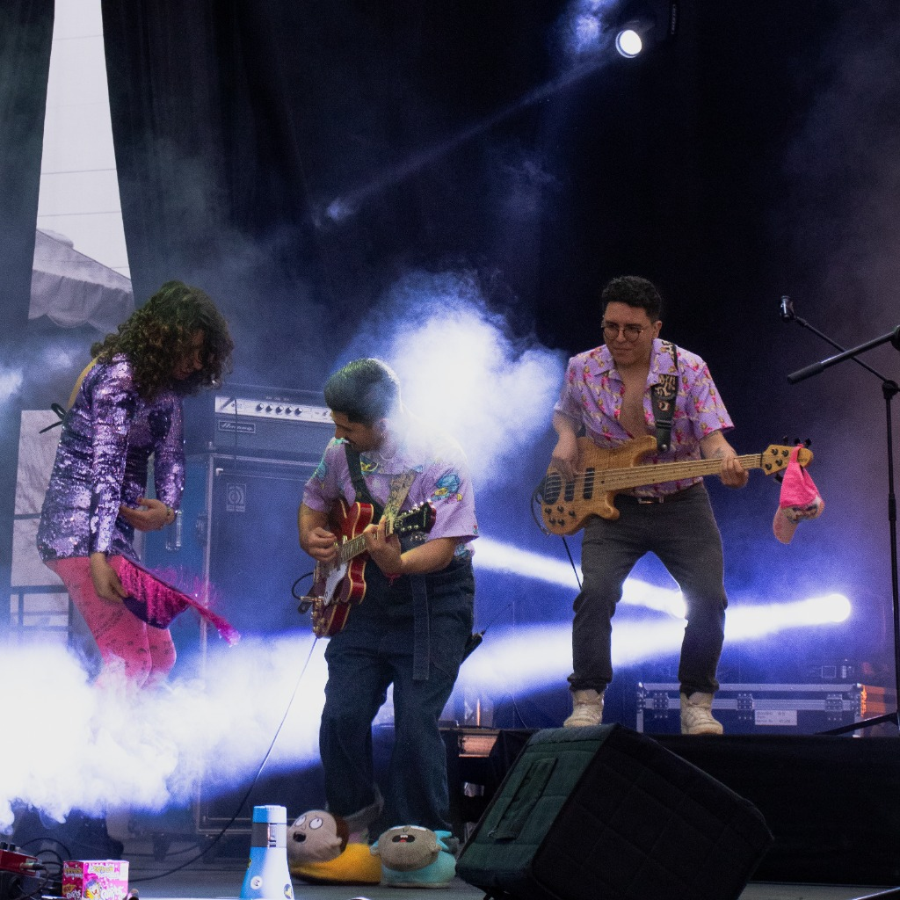
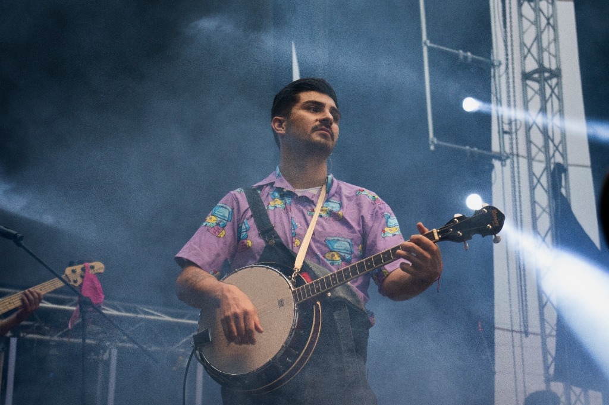
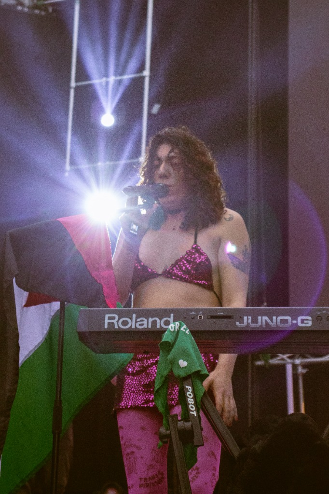

Conciertos en Vivo
Bandas en Escenario
Registro fotográfico en vivo: captura de energía del público, sincronización con iluminación escénica y entrega de material post-evento.
Estrategia de comunicación visual, creación de piezas publicitarias para marcas comerciales y cobertura fotográfica profesional en escenarios y festivales multitudinarios.
Selección de fotografías de eventos multitudinarios y diseños publicitarios desarrollados para clientes.

Registro fotográfico en vivo: captura de energía del público, sincronización con iluminación escénica y entrega de material post-evento.

Concepto visual y composición de producto para lanzamiento comercial en redes sociales y punto de venta.
Dirección de arte, fotografía de retrato corporativo y diagramación de pieza publicitaria para conversión en canales digitales.

Fotografía de acción rápida en condiciones de iluminación complejas y atmósfera de festival al aire libre.

Composición de detalle: enfoque nítido, textura instrumental y profundidad de campo en tarima en vivo.

Captura de momentos cumbre, manejo de destellos de luz directa y fidelidad del ambiente sonoro en imagen fija.
| Marca / Evento | Tipo de Cobertura | Enfoque Visual | Período |
|---|---|---|---|
| Rock al Parque | Fotografía de Festivales Masivos | Bandas en tarima, acción en vivo y ambiente multitudinario | 2023 - 2024 |
| Fresa Mía | Marketing Gastronómico & Redes | Fotografía de producto por capas, videos y promociones | 2023 - 2025 |
| Dra. Alison Cuchia | Marketing Médico & Retrato | Retrato corporativo y diagramación de piezas publicitarias | 2024 |
| Desorden Público & Aguas Ardientes | Conciertos en Vivo | Registro fotográfico de presentaciones y soporte post-evento | 2023 - 2024 |
| Edificio Inmobiliario | Fotografía Arquitectónica | Catálogo de espacios comerciales y piezas para portales | 2024 |
| Rock Inc. | Branding & Contenido Comercial | Storytelling visual para marca juvenil y eventos | 2023 - Act. |
| Formación: Curso de Fotografía Profesional (2023) enfocado en iluminación y composición publicitaria. | |||